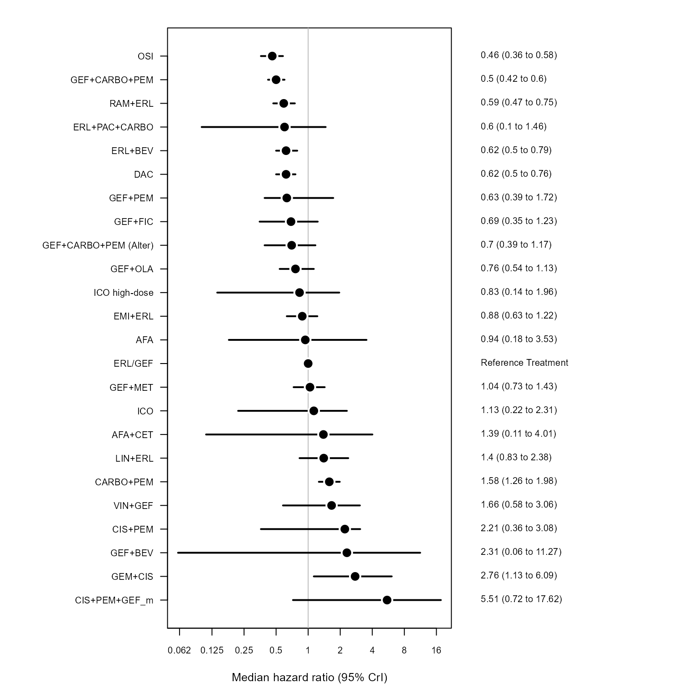

Introduction
This document describes how to use the main functions of
NMA to run a single network meta-analysis.
Example
First load the required packages.
Settings
Define the BUGS parameters for MCMC. This is not necessary, but recommended, because there are default values for these.
bugs_params <-
list(
PROG = "openBugs", # which version of BUGS to use to run the MCMC
N.BURNIN = 10,#00, # number of steps to throw away
N.SIMS = 150,#0, # total number of simulations
N.CHAINS = 2, # number of chains
N.THIN = 1, # thinning rate
PAUSE = TRUE)Define the scenario we will use for the analysis.
RANDOM <- FALSE # is this a random effects model?
REFTX <- "ERL/GEF" # reference treatment
is_bin <- TRUE # include binary data?
is_med <- TRUE # include median data?
label_name <- "BC_PFS_mFE"
endpoint <- "PFS" # which end point, PFS, OS, ...?
analysis_type <- "BC" # main data tagRead in datasets
The trials data consist of up to 3 separate data frames. A main
table, subData, and optional tables for median event time
and binary data, subDataMed and subDataBin
respectively. Lets read in the each data set separately. In another
article we will show how to do this in one function call by including a
Reference file in the data folder which contains the meta data of how to
read in the study data. If there is no binary or median data used in the
NMA then the variables subDataBin and
subDataMed are assigned NA.
file_name <- paste0(here::here("raw_data"), "/survdata_", endpoint, "_")
subData <-
read.csv(paste0(file_name, analysis_type, ".csv"),
header = TRUE,
as.is = TRUE)
subDataBin <-
if (is_bin) {
read.csv(paste0(file_name, "bin.csv"),
header = TRUE,
as.is = TRUE)
} else {NA}
subDataMed <-
if (is_med) {
read.csv(paste0(file_name, "med.csv"),
header = TRUE,
as.is = TRUE) %>%
mutate(medR = floor(medR))
} else {NA}Build model
Now we can create the NMA object to use in the modelling. The workflow is to first create this separately to actually doing the fitting. This then means that we can perform modified fits but we don’t have to redo any of the preparatory work.
nma_model <-
new_NMA(subData = subData,
subDataMed = subDataMed,
subDataBin = subDataBin,
bugs_params = bugs_params,
is_random = RANDOM,
refTx = REFTX ,
effectParam = "beta",
modelParams = "totresdev",
label = label_name,
endpoint = endpoint)
#> Warning in if (!is.na(subDataBin)) {: the condition has length > 1 and only the
#> first element will be used
#> Warning in if (!is.na(subDataMed)) {: the condition has length > 1 and only the
#> first element will be used
nma_model
#> $dat
#> $dat$inits
#> function() {
#> list(
#> beta = c(NA, rnorm(nTx - 1, 0, 2)),
#> sd = 0.1,
#> alpha = rnorm(nStudies)) %>%
#> .[param_names]
#> }
#> <bytecode: 0x00000000148a97e8>
#> <environment: 0x0000000014858418>
#>
#> $dat$subData
#> X study base tx
#> 1 6 ARCHER 1050 (Wu, 2017) ERL/GEF DAC
#> 2 9 CONVINCE (Shi 2017) CIS+PEM ICO
#> 3 26 CTRI/2015/08/006113 (Patil 2017) CARBO+PEM ERL/GEF
#> 4 15 CTRI/2016/08/007149 (Noronha 2019b) ERL/GEF GEF+CARBO+PEM
#> 5 22 ENSURE (Wu 2015) GEM+CIS ERL/GEF
#> 6 5 FLAURA (Soria 2018) ERL/GEF OSI
#> 7 4 GOAL (Campelo 2018) ERL/GEF GEF+OLA
#> 8 3 INCREASE (Li 2018) ICO ICO high-dose
#> 9 17 JO25567 (JapicCTI-111390) (Seto 2014) ERL/GEF ERL+BEV
#> 10 2 LUX-Lung 3 (Sequist 2013) CIS+PEM AFA
#> 11 24 LUX-Lung 6 (Wu 2014a)\n GEM+CIS AFA
#> 12 25 LUX-Lung 7 (Park 2016) ERL/GEF AFA
#> 13 20 NCT01017874 (Yang, 2014) ERL/GEF CIS+PEM+GEF_m
#> 14 7 NCT01221077 (Leighl 2017 ERL/GEF LIN+ERL
#> 15 18 NCT01469000 (Yang, 2020) ERL/GEF GEF+PEM
#> 16 16 NCT01532089 (Stinchcombe 2019) ERL/GEF ERL+BEV
#> 17 21 NCT01769066 (Yu 2014) CIS+PEM CIS+PEM+GEF_m
#> 18 28 NCT01864681 (Li 2019) ERL/GEF GEF+MET
#> 19 8 NCT01897480 (Scagliotti, 2020) ERL/GEF EMI+ERL
#> 20 12 NCT02148380 (Han, 2017) ERL/GEF CARBO+PEM
#> 21 10 NCT02148380 (Han, 2017) ERL/GEF ERL/GEF
#> 22 11 NCT02148380 (Han, 2017) ERL/GEF GEF+CARBO+PEM
#> 23 13 NEJ005/TCOG0902 (Sugawara, 2015) GEF+CARBO+PEM (Alter) GEF+CARBO+PEM
#> 24 27 NEJ009 (UMIN000006340) (Hosomi 2019) ERL/GEF GEF+CARBO+PEM
#> 25 19 NEJ026 (Saito 2019) ERL/GEF ERL+BEV
#> 26 1 RELAY (Nakagawa, 2019) ERL/GEF RAM+ERL
#> 27 14 SWOG S1403 (Goldberg 2018) AFA AFA+CET
#> 28 23 TORCH (Gridelli 2012) GEM+CIS ERL/GEF
#> Lmean Lse multi_arm Ltx Lbase Lstudy
#> 1 -0.47803580 0.1134403 0 7 1 6
#> 2 -0.43078292 0.1546265 0 19 5 9
#> 3 -0.41551544 0.1291164 0 1 4 24
#> 4 -0.67330000 0.1342100 0 12 1 13
#> 5 -1.07880966 0.2144855 0 1 18 20
#> 6 -0.77652879 0.1102381 0 22 1 5
#> 7 -0.28768207 0.1864509 0 16 1 4
#> 8 -0.30110509 0.1758496 0 20 19 3
#> 9 -0.61618614 0.2004921 0 9 1 15
#> 10 -0.71334989 0.1437422 0 2 5 2
#> 11 -1.34707365 0.1630306 0 2 18 22
#> 12 -0.24846136 0.1235321 0 2 1 23
#> 13 -0.18632958 0.3443691 0 6 1 18
#> 14 0.31188676 0.2970771 0 21 1 7
#> 15 -0.40047757 0.1499456 0 17 1 16
#> 16 -0.21072103 0.2457077 0 9 1 14
#> 17 -1.60943791 0.6908291 0 6 5 19
#> 18 0.03922071 0.1681749 0 15 1 26
#> 19 -0.11653382 0.1658275 0 8 1 8
#> 20 1.04982212 0.4706135 1 4 1 10
#> 21 0.00000000 0.2152550 1 1 1 10
#> 22 -0.73396918 0.4539455 1 12 1 10
#> 23 -0.34249031 0.2678118 0 12 13 11
#> 24 -0.71334989 0.1182584 0 12 1 25
#> 25 -0.50252682 0.1896482 0 9 1 17
#> 26 -0.52593926 0.1275307 0 23 1 1
#> 27 0.15700375 0.1967513 0 3 2 12
#> 28 -0.51082562 0.3536465 0 1 18 21
#>
#> $dat$subDataBin
#> study base tx BinR BinN Btx Bbase Bstudy
#> 1 NCT01039948 (Mok, 2016) ERL/GEF ERL/GEF 34 38 1 1 33
#> 2 NCT01039948 (Mok, 2016) ERL/GEF GEF+FIC 27 33 14 1 33
#>
#> $dat$subDataMed
#> study base tx median
#> 1 An 2016 ERL/GEF ERL/GEF 14.0
#> 2 An 2016 ERL/GEF GEF+PEM 18.0
#> 3 CALGB 30406 (NCT00126581) (Janne 2012) ERL/GEF ERL/GEF 14.1
#> 4 CALGB 30406 (NCT00126581) (Janne 2012) ERL/GEF ERL+PAC+CARBO 17.2
#> 5 GENOA / NCT02319577 (Genova, 2019) ERL/GEF ERL/GEF 9.5
#> 6 GENOA / NCT02319577 (Genova, 2019) ERL/GEF VIN+GEF 6.2
#> 7 IFCT-1503 ACE-Lung (Cortot 2019) AFA AFA 11.1
#> 8 IFCT-1503 ACE-Lung (Cortot 2019) AFA AFA+CET 12.8
#> 9 NCT01502202 (Lee 2016) CIS+PEM+GEF_m CIS+PEM 7.8
#> 10 NCT01502202 (Lee 2016) CIS+PEM+GEF_m CIS+PEM+GEF_m 13.3
#> 11 UMIN000013586 (Kitagawa, 2019) ERL/GEF ERL/GEF 15.1
#> 12 UMIN000013586 (Kitagawa, 2019) ERL/GEF GEF+BEV 5.4
#> medN medR mediantx medianbase medianstudy
#> 1 45 22 1 1 27
#> 2 45 22 17 1 27
#> 3 33 16 1 1 30
#> 4 33 16 10 1 30
#> 5 21 10 1 1 32
#> 6 23 11 24 1 32
#> 7 59 29 2 2 29
#> 8 59 29 3 2 29
#> 9 37 18 5 6 31
#> 10 39 19 6 6 31
#> 11 10 5 1 1 28
#> 12 6 3 11 1 28
#>
#> $dat$bugsData
#> $dat$bugsData$mu_beta
#> [1] 0
#>
#> $dat$bugsData$prec_beta
#> [1] 1e-06
#>
#> $dat$bugsData$mu_alpha
#> [1] 0
#>
#> $dat$bugsData$prec_alpha
#> [1] 1e-06
#>
#> $dat$bugsData$Lstudy
#> [1] 6 9 24 13 20 5 4 3 15 2 22 23 18 7 16 14 19 26 8 10 10 10 11 25 17
#> [26] 1 12 21
#>
#> $dat$bugsData$Ltx
#> [1] 7 19 1 12 1 22 16 20 9 2 2 2 6 21 17 9 6 15 8 4 1 12 12 12 9
#> [26] 23 3 1
#>
#> $dat$bugsData$Lbase
#> [1] 1 5 4 1 18 1 1 19 1 5 18 1 1 1 1 1 5 1 1 1 1 1 13 1 1
#> [26] 1 2 18
#>
#> $dat$bugsData$Lmean
#> [1] -0.47803580 -0.43078292 -0.41551544 -0.67330000 -1.07880966 -0.77652879
#> [7] -0.28768207 -0.30110509 -0.61618614 -0.71334989 -1.34707365 -0.24846136
#> [13] -0.18632958 0.31188676 -0.40047757 -0.21072103 -1.60943791 0.03922071
#> [19] -0.11653382 1.04982212 0.00000000 -0.73396918 -0.34249031 -0.71334989
#> [25] -0.50252682 -0.52593926 0.15700375 -0.51082562
#>
#> $dat$bugsData$Lse
#> [1] 0.1134403 0.1546265 0.1291164 0.1342100 0.2144855 0.1102381 0.1864509
#> [8] 0.1758496 0.2004921 0.1437422 0.1630306 0.1235321 0.3443691 0.2970771
#> [15] 0.1499456 0.2457077 0.6908291 0.1681749 0.1658275 0.4706135 0.2152550
#> [22] 0.4539455 0.2678118 0.1182584 0.1896482 0.1275307 0.1967513 0.3536465
#>
#> $dat$bugsData$multi
#> [1] 0 0 0 0 0 0 0 0 0 0 0 0 0 0 0 0 0 0 0 1 1 1 0 0 0 0 0 0
#>
#> $dat$bugsData$LnObs
#> [1] 28
#>
#> $dat$bugsData$nTx
#> [1] 24
#>
#> $dat$bugsData$nStudies
#> [1] 33
#>
#> $dat$bugsData$medianStudy
#> [1] 27 27 30 30 32 32 29 29 31 31 28 28
#>
#> $dat$bugsData$medianTx
#> [1] 1 17 1 10 1 24 2 3 5 6 1 11
#>
#> $dat$bugsData$medianBase
#> [1] 1 1 1 1 1 1 2 2 6 6 1 1
#>
#> $dat$bugsData$Bstudy
#> [1] 33 33
#>
#> $dat$bugsData$Btx
#> [1] 1 14
#>
#> $dat$bugsData$Bbase
#> [1] 1 1
#>
#> $dat$bugsData$medianN
#> [1] 45 45 33 33 21 23 59 59 37 39 10 6
#>
#> $dat$bugsData$medianR
#> [1] 22 22 16 16 10 11 29 29 18 19 5 3
#>
#> $dat$bugsData$median
#> [1] 14.0 18.0 14.1 17.2 9.5 6.2 11.1 12.8 7.8 13.3 15.1 5.4
#>
#> $dat$bugsData$medianNObs
#> [1] 12
#>
#> $dat$bugsData$Bn
#> [1] 38 33
#>
#> $dat$bugsData$Br
#> [1] 34 27
#>
#> $dat$bugsData$BnObs
#> [1] 2
#>
#>
#> $dat$txList
#> [1] "ERL/GEF" "AFA" "AFA+CET"
#> [4] "CARBO+PEM" "CIS+PEM" "CIS+PEM+GEF_m"
#> [7] "DAC" "EMI+ERL" "ERL+BEV"
#> [10] "ERL+PAC+CARBO" "GEF+BEV" "GEF+CARBO+PEM"
#> [13] "GEF+CARBO+PEM (Alter)" "GEF+FIC" "GEF+MET"
#> [16] "GEF+OLA" "GEF+PEM" "GEM+CIS"
#> [19] "ICO" "ICO high-dose" "LIN+ERL"
#> [22] "OSI" "RAM+ERL" "VIN+GEF"
#>
#>
#> $is_med
#> [1] TRUE
#>
#> $is_bin
#> [1] TRUE
#>
#> $bugs_params
#> $bugs_params$PROG
#> [1] "openBugs"
#>
#> $bugs_params$N.BURNIN
#> [1] 10
#>
#> $bugs_params$N.SIMS
#> [1] 150
#>
#> $bugs_params$N.CHAINS
#> [1] 2
#>
#> $bugs_params$N.THIN
#> [1] 1
#>
#> $bugs_params$PAUSE
#> [1] TRUE
#>
#> $bugs_params$run_bugs
#> [1] TRUE
#>
#>
#> $bugs_fn
#> function(...)
#> R2OpenBUGS::bugs(...)
#> <bytecode: 0x000000001fc4cc70>
#> <environment: 0x000000001fc52c00>
#>
#> $is_random
#> [1] FALSE
#>
#> $refTx
#> [1] "ERL/GEF"
#>
#> $effectParam
#> [1] "beta"
#>
#> $modelParams
#> [1] "totresdev"
#>
#> $label
#> [1] "BC_PFS_mFE"
#>
#> $endpoint
#> [1] "PFS"
#>
#> attr(,"class")
#> [1] "nma"
#> attr(,"CALL")
#> attr(,"CALL")$subData
#> subData
#>
#> attr(,"CALL")$subDataMed
#> subDataMed
#>
#> attr(,"CALL")$subDataBin
#> subDataBin
#>
#> attr(,"CALL")$bugs_params
#> bugs_params
#>
#> attr(,"CALL")$is_random
#> RANDOM
#>
#> attr(,"CALL")$refTx
#> REFTX
#>
#> attr(,"CALL")$effectParam
#> [1] "beta"
#>
#> attr(,"CALL")$modelParams
#> [1] "totresdev"
#>
#> attr(,"CALL")$label
#> label_name
#>
#> attr(,"CALL")$endpoint
#> endpointWe can view the network graph.
library(sna)
plotNetwork(nma_model)
Run MCMC
The NMA MCMC function calls the appropriate BUGS model.
nma_res <- NMA_run(nma_model, save = FALSE)
#> ====== RUNNING BUGS MODEL
nma_res
#> Inference for Bugs model at "C:/Users/Nathan/Documents/R/NMA/inst/FE_med_bin.txt",
#> 2 chains, each with 160 iterations (first 10 discarded)
#> n.sims = 300 iterations saved
#> mean sd 2.5% 25% 50% 75% 97.5% Rhat n.eff
#> beta[2] 0.1 0.7 -0.8 -0.6 0.4 0.8 0.9 2.0 4
#> beta[3] -0.5 0.2 -0.9 -0.7 -0.5 -0.3 -0.2 1.7 5
#> beta[4] 0.4 0.1 0.2 0.4 0.5 0.5 0.7 1.0 150
#> beta[5] 0.1 0.6 -0.9 -0.3 0.0 0.6 1.1 3.1 3
#> beta[6] 0.4 1.5 -1.7 -0.6 -0.2 2.1 2.9 3.4 3
#> beta[7] -0.5 0.1 -0.7 -0.6 -0.5 -0.4 -0.3 1.0 300
#> beta[8] -0.1 0.2 -0.4 -0.2 -0.1 0.0 0.2 1.0 300
#> beta[9] -0.5 0.1 -0.7 -0.6 -0.5 -0.4 -0.2 1.0 110
#> beta[10] -0.2 0.4 -0.9 -0.5 -0.2 0.0 0.4 1.2 16
#> beta[11] 1.0 0.8 -1.3 0.5 1.1 1.5 2.3 1.0 300
#> beta[12] -0.7 0.1 -0.9 -0.8 -0.7 -0.6 -0.5 1.0 300
#> beta[13] -0.4 0.3 -0.9 -0.6 -0.4 -0.2 0.1 1.0 300
#> beta[14] -0.4 0.3 -1.3 -0.6 -0.4 -0.2 0.1 1.4 7
#> beta[15] 0.0 0.2 -0.3 -0.1 0.0 0.2 0.4 1.0 300
#> beta[16] -0.3 0.2 -0.6 -0.4 -0.3 -0.2 0.1 1.0 300
#> beta[17] -0.9 0.5 -1.7 -1.4 -1.1 -0.4 -0.2 1.0 300
#> beta[18] 1.2 0.4 0.6 0.9 1.3 1.6 1.9 1.8 4
#> beta[19] -0.4 0.6 -1.4 -0.8 -0.4 0.2 0.8 2.9 3
#> beta[20] -0.7 0.6 -1.8 -1.2 -0.7 -0.2 0.5 2.6 3
#> beta[21] 0.3 0.3 -0.3 0.1 0.3 0.5 0.9 1.0 130
#> beta[22] -0.8 0.1 -1.0 -0.9 -0.8 -0.7 -0.5 1.0 300
#> beta[23] -0.5 0.1 -0.8 -0.6 -0.5 -0.4 -0.3 1.0 300
#> beta[24] 0.2 0.5 -1.1 0.2 0.2 0.5 0.8 1.0 55
#> totresdev 910.3 710.7 47.8 111.2 776.0 1625.5 1984.5 1.1 31
#> deviance 926.2 711.4 63.1 125.4 791.5 1648.2 2000.0 1.1 28
#>
#> For each parameter, n.eff is a crude measure of effective sample size,
#> and Rhat is the potential scale reduction factor (at convergence, Rhat=1).
#>
#> DIC info (using the rule, pD = Dbar-Dhat)
#> pD = 574.6 and DIC = 1501.0
#> DIC is an estimate of expected predictive error (lower deviance is better).Reconfigure model
It is simple to modify an existing analysis without repeating the previous steps. For example, we can run the NMA for a random effects rather than a fixed effects model version of the same model.
nma_model2 <-
NMA_update(nma_model,
is_random = TRUE)
#> Warning in if (!is.na(subDataBin)) {: the condition has length > 1 and only the
#> first element will be used
#> Warning in if (!is.na(subDataMed)) {: the condition has length > 1 and only the
#> first element will be used
nma_res2 <- NMA_run(nma_model2, save = FALSE)
#> ====== RUNNING BUGS MODEL
nma_res2
#> Inference for Bugs model at "C:/Users/Nathan/Documents/R/NMA/inst/RE_med_bin.txt",
#> 2 chains, each with 160 iterations (first 10 discarded)
#> n.sims = 300 iterations saved
#> mean sd 2.5% 25% 50% 75% 97.5% Rhat n.eff
#> beta[2] 0.1 0.3 -0.2 -0.2 0.1 0.4 0.4 22.8 2
#> beta[3] -3.0 3.1 -7.5 -6.5 -0.2 -0.1 0.0 6.0 2
#> beta[4] 1.5 1.0 -0.2 0.4 1.6 2.4 2.9 3.8 2
#> beta[5] 3.4 1.8 -0.2 2.6 2.8 5.1 6.6 1.6 6
#> beta[6] -0.3 2.7 -4.3 -3.3 1.1 2.1 2.3 5.8 2
#> beta[7] 0.5 0.8 -0.7 -0.1 0.4 0.8 2.2 1.7 5
#> beta[8] 0.2 2.2 -3.6 -1.7 0.4 2.2 3.6 4.9 2
#> beta[9] -1.1 1.8 -3.8 -3.0 -0.8 0.8 1.7 3.1 3
#> beta[10] -6.7 2.4 -9.2 -9.0 -6.9 -4.4 -3.7 20.3 2
#> beta[11] 1.9 1.4 -0.3 1.0 1.6 2.6 5.5 1.2 16
#> beta[12] -1.5 0.7 -2.7 -2.0 -1.5 -1.2 -0.2 1.3 12
#> beta[13] -2.7 2.7 -8.4 -4.2 -2.5 -0.7 1.6 1.2 130
#> beta[14] -0.4 1.0 -2.1 -1.0 -0.4 0.1 1.2 3.2 3
#> beta[15] 0.6 1.4 -1.4 -0.6 0.4 1.7 2.9 4.4 2
#> beta[16] -0.2 1.9 -3.5 -1.7 -0.3 0.9 3.7 1.8 5
#> beta[17] -4.0 1.9 -6.9 -6.0 -2.7 -2.3 -1.6 4.9 2
#> beta[18] 0.9 0.9 -1.8 0.6 1.1 1.5 2.1 2.2 3
#> beta[19] 3.4 1.2 1.1 2.2 3.8 4.5 5.1 1.0 300
#> beta[20] 1.9 1.4 -1.2 1.0 1.8 3.1 4.2 2.9 3
#> beta[21] -0.2 1.0 -2.1 -0.8 -0.3 0.3 2.2 1.2 23
#> beta[22] 1.2 2.0 -1.4 -0.1 0.6 1.7 5.7 2.5 3
#> beta[23] 1.2 1.1 -0.9 0.4 1.3 1.8 2.9 1.0 150
#> beta[24] 1.1 1.3 -1.5 0.0 0.9 2.5 2.7 3.0 3
#> totresdev 188.5 319.2 24.9 40.7 95.3 179.4 1005.9 2.8 3
#> deviance 204.4 318.9 42.0 56.9 111.9 195.1 1020.0 2.7 3
#>
#> For each parameter, n.eff is a crude measure of effective sample size,
#> and Rhat is the potential scale reduction factor (at convergence, Rhat=1).
#>
#> DIC info (using the rule, pD = Dbar-Dhat)
#> pD = 149.5 and DIC = 353.9
#> DIC is an estimate of expected predictive error (lower deviance is better).Plot and tables
BUGS plots are available for diagnosing the performance.
diagnostics(nma_res2, save = TRUE)Different NMA tables can be created. They can provide a record of the analysis.
# write_data_to_file(nma_model)
# write_results_table(nma_model, nma_res)
pairwiseTable(nma_model, nma_res)
#> ERL/GEF AFA
#> ERL/GEF "1 (1,1)" "0.7 (0.39,2.13)"
#> AFA "1.43 (0.47,2.53)" "1 (1,1)"
#> AFA+CET "0.58 (0.4,0.78)" "0.41 (0.22,1.32)"
#> CARBO+PEM "1.58 (1.23,1.94)" "1.13 (0.54,3.68)"
#> CIS+PEM "0.96 (0.41,3.09)" "0.9 (0.38,3)"
#> CIS+PEM+GEF_m "0.83 (0.19,19.08)" "1.19 (0.32,7.61)"
#> DAC "0.62 (0.5,0.77)" "0.45 (0.23,1.42)"
#> EMI+ERL "0.88 (0.66,1.19)" "0.71 (0.31,2.17)"
#> ERL+BEV "0.62 (0.49,0.78)" "0.44 (0.22,1.52)"
#> ERL+PAC+CARBO "0.81 (0.39,1.54)" "0.56 (0.22,2.56)"
#> GEF+BEV "2.96 (0.28,9.89)" "2.11 (0.15,16.96)"
#> GEF+CARBO+PEM "0.49 (0.41,0.59)" "0.35 (0.18,1.15)"
#> GEF+CARBO+PEM (Alter) "0.68 (0.41,1.15)" "0.54 (0.21,2.03)"
#> GEF+FIC "0.68 (0.28,1.15)" "0.49 (0.15,1.8)"
#> GEF+MET "1.04 (0.73,1.49)" "0.77 (0.34,2.82)"
#> GEF+OLA "0.75 (0.54,1.07)" "0.61 (0.24,1.88)"
#> GEF+PEM "0.35 (0.18,0.84)" "0.34 (0.07,1.69)"
#> GEM+CIS "3.72 (1.88,6.46)" "2.91 (1.85,5.18)"
#> ICO "0.66 (0.25,2.14)" "0.59 (0.24,2.3)"
#> ICO high-dose "0.49 (0.17,1.68)" "0.44 (0.14,1.58)"
#> LIN+ERL "1.41 (0.72,2.37)" "1.05 (0.34,3.8)"
#> OSI "0.46 (0.37,0.58)" "0.34 (0.16,1.1)"
#> RAM+ERL "0.58 (0.46,0.74)" "0.45 (0.21,1.38)"
#> VIN+GEF "1.25 (0.32,2.26)" "1.4 (0.17,4.13)"
#> AFA+CET CARBO+PEM
#> ERL/GEF "1.72 (1.28,2.48)" "0.63 (0.51,0.81)"
#> AFA "2.43 (0.75,4.62)" "0.88 (0.27,1.84)"
#> AFA+CET "1 (1,1)" "0.38 (0.25,0.57)"
#> CARBO+PEM "2.62 (1.77,4.08)" "1 (1,1)"
#> CIS+PEM "2 (0.66,4.79)" "0.63 (0.24,2.2)"
#> CIS+PEM+GEF_m "1.8 (0.34,26.61)" "0.52 (0.11,11.96)"
#> DAC "1.02 (0.75,1.66)" "0.4 (0.29,0.56)"
#> EMI+ERL "1.47 (0.97,2.59)" "0.56 (0.41,0.85)"
#> ERL+BEV "1.03 (0.7,1.67)" "0.4 (0.27,0.54)"
#> ERL+PAC+CARBO "1.35 (0.7,2.83)" "0.5 (0.25,1.11)"
#> GEF+BEV "4.57 (0.36,20.21)" "1.85 (0.19,6.54)"
#> GEF+CARBO+PEM "0.84 (0.59,1.21)" "0.31 (0.24,0.43)"
#> GEF+CARBO+PEM (Alter) "1.16 (0.65,2.2)" "0.44 (0.25,0.81)"
#> GEF+FIC "1.08 (0.63,2.15)" "0.43 (0.17,0.75)"
#> GEF+MET "1.74 (1.16,2.9)" "0.67 (0.45,0.99)"
#> GEF+OLA "1.27 (0.79,2.2)" "0.48 (0.32,0.74)"
#> GEF+PEM "0.65 (0.24,1.78)" "0.24 (0.11,0.59)"
#> GEM+CIS "5.92 (3.16,11.24)" "2.42 (1.13,4.35)"
#> ICO "1.25 (0.41,3.17)" "0.43 (0.15,1.46)"
#> ICO high-dose "0.88 (0.27,2.45)" "0.32 (0.1,1.18)"
#> LIN+ERL "2.34 (1.03,4.27)" "0.88 (0.46,1.55)"
#> OSI "0.76 (0.53,1.2)" "0.3 (0.2,0.4)"
#> RAM+ERL "0.96 (0.67,1.51)" "0.38 (0.27,0.51)"
#> VIN+GEF "2.19 (0.41,4.38)" "0.84 (0.22,1.56)"
#> CIS+PEM CIS+PEM+GEF_m
#> ERL/GEF "1.04 (0.32,2.45)" "1.21 (0.05,5.39)"
#> AFA "1.11 (0.33,2.63)" "0.84 (0.13,3.1)"
#> AFA+CET "0.5 (0.21,1.52)" "0.56 (0.04,2.98)"
#> CARBO+PEM "1.6 (0.45,4.23)" "1.92 (0.08,9.29)"
#> CIS+PEM "1 (1,1)" "1.14 (0.09,3.41)"
#> CIS+PEM+GEF_m "0.88 (0.29,11.35)" "1 (1,1)"
#> DAC "0.63 (0.19,1.63)" "0.77 (0.03,3.54)"
#> EMI+ERL "0.89 (0.26,2.32)" "1.07 (0.05,6.11)"
#> ERL+BEV "0.61 (0.19,1.71)" "0.75 (0.03,3.82)"
#> ERL+PAC+CARBO "0.61 (0.21,2.54)" "0.69 (0.04,5.72)"
#> GEF+BEV "2.35 (0.31,13.28)" "2.43 (0.04,22.1)"
#> GEF+CARBO+PEM "0.5 (0.16,1.29)" "0.59 (0.03,3.07)"
#> GEF+CARBO+PEM (Alter) "0.66 (0.2,2.16)" "0.73 (0.04,4.43)"
#> GEF+FIC "0.64 (0.21,1.99)" "0.73 (0.04,4.3)"
#> GEF+MET "1.01 (0.31,3.1)" "1.18 (0.06,6.78)"
#> GEF+OLA "0.74 (0.24,2.03)" "0.87 (0.04,4.48)"
#> GEF+PEM "0.29 (0.09,1.84)" "0.39 (0.01,4.07)"
#> GEM+CIS "3.32 (1.15,6.36)" "3.34 (0.3,15.33)"
#> ICO "0.65 (0.47,0.87)" "0.73 (0.05,2.52)"
#> ICO high-dose "0.48 (0.3,0.73)" "0.53 (0.04,1.91)"
#> LIN+ERL "1.33 (0.38,4.12)" "1.59 (0.07,7.92)"
#> OSI "0.46 (0.13,1.2)" "0.56 (0.03,2.88)"
#> RAM+ERL "0.59 (0.18,1.5)" "0.73 (0.03,3.63)"
#> VIN+GEF "1.14 (0.4,4.31)" "1.63 (0.04,7.21)"
#> DAC EMI+ERL
#> ERL/GEF "1.61 (1.3,2.01)" "1.13 (0.84,1.52)"
#> AFA "2.24 (0.71,4.42)" "1.41 (0.46,3.26)"
#> AFA+CET "0.98 (0.6,1.34)" "0.68 (0.39,1.03)"
#> CARBO+PEM "2.48 (1.79,3.46)" "1.79 (1.18,2.44)"
#> CIS+PEM "1.59 (0.61,5.2)" "1.12 (0.43,3.78)"
#> CIS+PEM+GEF_m "1.3 (0.28,31.26)" "0.93 (0.16,20.88)"
#> DAC "1 (1,1)" "0.7 (0.49,1)"
#> EMI+ERL "1.43 (1,2.05)" "1 (1,1)"
#> ERL+BEV "0.99 (0.73,1.33)" "0.69 (0.48,1.01)"
#> ERL+PAC+CARBO "1.32 (0.62,2.81)" "0.89 (0.43,1.9)"
#> GEF+BEV "4.7 (0.44,17.37)" "3.25 (0.35,11.93)"
#> GEF+CARBO+PEM "0.8 (0.58,1.03)" "0.56 (0.39,0.78)"
#> GEF+CARBO+PEM (Alter) "1.11 (0.63,1.96)" "0.76 (0.42,1.39)"
#> GEF+FIC "1.1 (0.44,1.98)" "0.77 (0.32,1.32)"
#> GEF+MET "1.66 (1.14,2.48)" "1.16 (0.74,1.87)"
#> GEF+OLA "1.2 (0.77,1.88)" "0.85 (0.52,1.41)"
#> GEF+PEM "0.61 (0.26,1.5)" "0.43 (0.19,1.05)"
#> GEM+CIS "5.94 (2.71,10.73)" "4.04 (1.89,7.71)"
#> ICO "1.08 (0.4,3.47)" "0.75 (0.27,2.61)"
#> ICO high-dose "0.78 (0.27,2.75)" "0.54 (0.17,2.02)"
#> LIN+ERL "2.21 (1.14,3.77)" "1.62 (0.78,2.76)"
#> OSI "0.73 (0.54,0.98)" "0.52 (0.37,0.72)"
#> RAM+ERL "0.93 (0.67,1.31)" "0.67 (0.45,0.96)"
#> VIN+GEF "2.14 (0.5,3.99)" "1.5 (0.34,2.92)"
#> ERL+BEV ERL+PAC+CARBO
#> ERL/GEF "1.61 (1.28,2.03)" "1.24 (0.65,2.55)"
#> AFA "2.27 (0.66,4.48)" "1.8 (0.39,4.53)"
#> AFA+CET "0.97 (0.6,1.42)" "0.74 (0.35,1.42)"
#> CARBO+PEM "2.53 (1.84,3.66)" "1.99 (0.9,4.06)"
#> CIS+PEM "1.64 (0.58,5.29)" "1.65 (0.39,4.75)"
#> CIS+PEM+GEF_m "1.33 (0.26,31.18)" "1.46 (0.17,22.53)"
#> DAC "1.01 (0.75,1.37)" "0.76 (0.36,1.61)"
#> EMI+ERL "1.44 (0.99,2.06)" "1.12 (0.53,2.35)"
#> ERL+BEV "1 (1,1)" "0.76 (0.37,1.62)"
#> ERL+PAC+CARBO "1.31 (0.62,2.7)" "1 (1,1)"
#> GEF+BEV "4.76 (0.47,16.83)" "3.67 (0.23,17.74)"
#> GEF+CARBO+PEM "0.8 (0.58,1.06)" "0.61 (0.28,1.3)"
#> GEF+CARBO+PEM (Alter) "1.09 (0.64,1.98)" "0.88 (0.35,2.03)"
#> GEF+FIC "1.09 (0.48,1.93)" "0.85 (0.39,1.5)"
#> GEF+MET "1.67 (1.13,2.57)" "1.29 (0.58,2.77)"
#> GEF+OLA "1.22 (0.77,1.83)" "0.93 (0.48,2.17)"
#> GEF+PEM "0.59 (0.26,1.48)" "0.56 (0.14,1.22)"
#> GEM+CIS "5.87 (2.78,10.61)" "4.53 (1.64,11.53)"
#> ICO "1.11 (0.37,3.54)" "1.01 (0.25,3.16)"
#> ICO high-dose "0.81 (0.27,2.76)" "0.69 (0.17,2.63)"
#> LIN+ERL "2.23 (1.17,3.78)" "1.78 (0.65,4.07)"
#> OSI "0.74 (0.52,1.01)" "0.58 (0.28,1.2)"
#> RAM+ERL "0.93 (0.69,1.32)" "0.73 (0.34,1.5)"
#> VIN+GEF "2.1 (0.5,4.01)" "1.56 (0.25,4.91)"
#> GEF+BEV GEF+CARBO+PEM
#> ERL/GEF "0.34 (0.1,3.53)" "2.03 (1.69,2.42)"
#> AFA "0.47 (0.06,6.78)" "2.85 (0.87,5.61)"
#> AFA+CET "0.22 (0.05,2.77)" "1.2 (0.83,1.69)"
#> CARBO+PEM "0.54 (0.15,5.24)" "3.18 (2.32,4.22)"
#> CIS+PEM "0.43 (0.08,3.25)" "2.01 (0.77,6.36)"
#> CIS+PEM+GEF_m "0.41 (0.05,27.62)" "1.69 (0.33,38.02)"
#> DAC "0.21 (0.06,2.28)" "1.25 (0.97,1.71)"
#> EMI+ERL "0.31 (0.08,2.83)" "1.79 (1.29,2.58)"
#> ERL+BEV "0.21 (0.06,2.15)" "1.25 (0.94,1.72)"
#> ERL+PAC+CARBO "0.27 (0.06,4.36)" "1.65 (0.77,3.61)"
#> GEF+BEV "1 (1,1)" "5.82 (0.64,20.78)"
#> GEF+CARBO+PEM "0.17 (0.05,1.55)" "1 (1,1)"
#> GEF+CARBO+PEM (Alter) "0.25 (0.05,1.97)" "1.39 (0.81,2.27)"
#> GEF+FIC "0.23 (0.06,2.89)" "1.36 (0.59,2.53)"
#> GEF+MET "0.37 (0.09,3.1)" "2.1 (1.43,3.19)"
#> GEF+OLA "0.26 (0.07,2.29)" "1.54 (1.01,2.24)"
#> GEF+PEM "0.15 (0.03,0.87)" "0.71 (0.34,1.96)"
#> GEM+CIS "1.33 (0.23,16.04)" "7.19 (3.64,13.06)"
#> ICO "0.26 (0.05,2.04)" "1.34 (0.48,4.17)"
#> ICO high-dose "0.18 (0.03,1.59)" "1.03 (0.32,3.42)"
#> LIN+ERL "0.5 (0.11,3.61)" "2.79 (1.47,5.25)"
#> OSI "0.16 (0.04,1.42)" "0.93 (0.7,1.23)"
#> RAM+ERL "0.2 (0.06,1.82)" "1.19 (0.82,1.65)"
#> VIN+GEF "0.44 (0.12,2.04)" "2.63 (0.69,5.01)"
#> GEF+CARBO+PEM (Alter) GEF+FIC
#> ERL/GEF "1.47 (0.87,2.45)" "1.47 (0.87,3.58)"
#> AFA "1.85 (0.49,4.86)" "2.05 (0.56,6.82)"
#> AFA+CET "0.86 (0.45,1.55)" "0.93 (0.46,1.6)"
#> CARBO+PEM "2.25 (1.23,4.07)" "2.32 (1.33,5.88)"
#> CIS+PEM "1.52 (0.46,4.89)" "1.57 (0.5,4.74)"
#> CIS+PEM+GEF_m "1.37 (0.23,26.83)" "1.37 (0.23,26.95)"
#> DAC "0.9 (0.51,1.59)" "0.91 (0.51,2.25)"
#> EMI+ERL "1.32 (0.72,2.35)" "1.31 (0.76,3.15)"
#> ERL+BEV "0.91 (0.51,1.57)" "0.91 (0.52,2.06)"
#> ERL+PAC+CARBO "1.14 (0.49,2.86)" "1.17 (0.67,2.57)"
#> GEF+BEV "3.97 (0.51,20.34)" "4.43 (0.35,16.59)"
#> GEF+CARBO+PEM "0.72 (0.44,1.23)" "0.73 (0.39,1.7)"
#> GEF+CARBO+PEM (Alter) "1 (1,1)" "1.05 (0.44,2.48)"
#> GEF+FIC "0.95 (0.4,2.27)" "1 (1,1)"
#> GEF+MET "1.49 (0.82,2.73)" "1.57 (0.86,3.57)"
#> GEF+OLA "1.1 (0.56,2.25)" "1.12 (0.59,2.77)"
#> GEF+PEM "0.55 (0.2,1.82)" "0.71 (0.22,1.37)"
#> GEM+CIS "5.13 (2.1,11.48)" "5.25 (2.12,16.63)"
#> ICO "1.02 (0.29,3.33)" "1.02 (0.34,3.31)"
#> ICO high-dose "0.73 (0.19,2.69)" "0.77 (0.24,2.52)"
#> LIN+ERL "1.93 (0.97,4.17)" "2.06 (0.9,5.22)"
#> OSI "0.67 (0.36,1.19)" "0.67 (0.38,1.63)"
#> RAM+ERL "0.85 (0.48,1.57)" "0.87 (0.48,2.1)"
#> VIN+GEF "1.87 (0.47,4.63)" "1.86 (0.4,4.39)"
#> GEF+MET GEF+OLA
#> ERL/GEF "0.96 (0.67,1.37)" "1.34 (0.94,1.86)"
#> AFA "1.31 (0.35,2.97)" "1.63 (0.53,4.14)"
#> AFA+CET "0.58 (0.35,0.86)" "0.79 (0.45,1.27)"
#> CARBO+PEM "1.5 (1.02,2.21)" "2.1 (1.35,3.16)"
#> CIS+PEM "0.99 (0.32,3.2)" "1.35 (0.49,4.23)"
#> CIS+PEM+GEF_m "0.85 (0.15,17.9)" "1.15 (0.22,24.8)"
#> DAC "0.6 (0.4,0.88)" "0.83 (0.53,1.3)"
#> EMI+ERL "0.87 (0.53,1.35)" "1.18 (0.71,1.91)"
#> ERL+BEV "0.6 (0.39,0.88)" "0.82 (0.55,1.29)"
#> ERL+PAC+CARBO "0.78 (0.36,1.73)" "1.08 (0.46,2.09)"
#> GEF+BEV "2.7 (0.32,11.39)" "3.79 (0.44,14.43)"
#> GEF+CARBO+PEM "0.48 (0.31,0.7)" "0.65 (0.45,0.99)"
#> GEF+CARBO+PEM (Alter) "0.67 (0.37,1.22)" "0.91 (0.44,1.77)"
#> GEF+FIC "0.64 (0.28,1.17)" "0.89 (0.36,1.68)"
#> GEF+MET "1 (1,1)" "1.39 (0.85,2.24)"
#> GEF+OLA "0.72 (0.45,1.18)" "1 (1,1)"
#> GEF+PEM "0.37 (0.15,0.95)" "0.51 (0.22,1.37)"
#> GEM+CIS "3.51 (1.54,6.84)" "4.58 (2.17,9.48)"
#> ICO "0.66 (0.21,2.16)" "0.89 (0.32,2.89)"
#> ICO high-dose "0.49 (0.14,1.85)" "0.66 (0.21,2.11)"
#> LIN+ERL "1.34 (0.65,2.63)" "1.83 (0.88,3.46)"
#> OSI "0.45 (0.3,0.68)" "0.61 (0.42,0.93)"
#> RAM+ERL "0.56 (0.37,0.85)" "0.77 (0.5,1.18)"
#> VIN+GEF "1.26 (0.32,2.44)" "1.76 (0.45,3.29)"
#> GEF+PEM GEM+CIS
#> ERL/GEF "2.86 (1.19,5.69)" "0.27 (0.15,0.53)"
#> AFA "2.95 (0.59,13.51)" "0.34 (0.19,0.54)"
#> AFA+CET "1.53 (0.56,4.25)" "0.17 (0.09,0.32)"
#> CARBO+PEM "4.12 (1.71,9.26)" "0.41 (0.23,0.88)"
#> CIS+PEM "3.45 (0.54,11.06)" "0.3 (0.16,0.87)"
#> CIS+PEM+GEF_m "2.55 (0.25,85.2)" "0.3 (0.07,3.31)"
#> DAC "1.64 (0.67,3.79)" "0.17 (0.09,0.37)"
#> EMI+ERL "2.35 (0.95,5.4)" "0.25 (0.13,0.53)"
#> ERL+BEV "1.68 (0.68,3.81)" "0.17 (0.09,0.36)"
#> ERL+PAC+CARBO "1.78 (0.82,7.41)" "0.22 (0.09,0.61)"
#> GEF+BEV "6.63 (1.15,30.7)" "0.75 (0.06,4.32)"
#> GEF+CARBO+PEM "1.4 (0.51,2.94)" "0.14 (0.08,0.27)"
#> GEF+CARBO+PEM (Alter) "1.81 (0.55,5.01)" "0.2 (0.09,0.48)"
#> GEF+FIC "1.41 (0.73,4.59)" "0.19 (0.06,0.47)"
#> GEF+MET "2.67 (1.06,6.68)" "0.29 (0.15,0.65)"
#> GEF+OLA "1.96 (0.73,4.56)" "0.22 (0.11,0.46)"
#> GEF+PEM "1 (1,1)" "0.11 (0.03,0.4)"
#> GEM+CIS "8.71 (2.49,31.87)" "1 (1,1)"
#> ICO "2.12 (0.33,7.66)" "0.19 (0.09,0.59)"
#> ICO high-dose "1.51 (0.23,5.62)" "0.13 (0.06,0.44)"
#> LIN+ERL "3.37 (1.24,9.29)" "0.41 (0.15,0.93)"
#> OSI "1.18 (0.5,2.71)" "0.13 (0.07,0.26)"
#> RAM+ERL "1.53 (0.64,3.32)" "0.16 (0.09,0.33)"
#> VIN+GEF "2.53 (1.39,8.65)" "0.42 (0.08,1.03)"
#> ICO ICO high-dose
#> ERL/GEF "1.51 (0.47,4.06)" "2.06 (0.6,6.01)"
#> AFA "1.69 (0.43,4.16)" "2.28 (0.63,6.93)"
#> AFA+CET "0.8 (0.32,2.42)" "1.13 (0.41,3.66)"
#> CARBO+PEM "2.32 (0.69,6.88)" "3.14 (0.85,9.99)"
#> CIS+PEM "1.54 (1.15,2.12)" "2.07 (1.37,3.37)"
#> CIS+PEM+GEF_m "1.37 (0.4,18.67)" "1.88 (0.52,28.47)"
#> DAC "0.93 (0.29,2.52)" "1.29 (0.36,3.67)"
#> EMI+ERL "1.33 (0.38,3.69)" "1.84 (0.49,5.77)"
#> ERL+BEV "0.9 (0.28,2.74)" "1.24 (0.36,3.77)"
#> ERL+PAC+CARBO "0.99 (0.32,4.07)" "1.46 (0.38,5.73)"
#> GEF+BEV "3.92 (0.49,21.87)" "5.42 (0.63,30.71)"
#> GEF+CARBO+PEM "0.75 (0.24,2.1)" "0.97 (0.29,3.09)"
#> GEF+CARBO+PEM (Alter) "0.98 (0.3,3.48)" "1.37 (0.37,5.25)"
#> GEF+FIC "0.98 (0.3,2.98)" "1.3 (0.4,4.23)"
#> GEF+MET "1.51 (0.46,4.84)" "2.05 (0.54,6.97)"
#> GEF+OLA "1.12 (0.35,3.09)" "1.51 (0.47,4.85)"
#> GEF+PEM "0.47 (0.13,3.05)" "0.66 (0.18,4.4)"
#> GEM+CIS "5.32 (1.68,10.74)" "7.44 (2.26,16.34)"
#> ICO "1 (1,1)" "1.35 (0.96,1.87)"
#> ICO high-dose "0.74 (0.53,1.04)" "1 (1,1)"
#> LIN+ERL "1.96 (0.56,6.49)" "2.66 (0.73,9.76)"
#> OSI "0.7 (0.2,1.92)" "0.92 (0.25,2.76)"
#> RAM+ERL "0.88 (0.26,2.57)" "1.17 (0.33,3.44)"
#> VIN+GEF "1.61 (0.56,6.52)" "2.18 (0.76,9.13)"
#> LIN+ERL OSI
#> ERL/GEF "0.71 (0.42,1.39)" "2.18 (1.73,2.67)"
#> AFA "0.95 (0.26,2.96)" "2.95 (0.91,6.18)"
#> AFA+CET "0.43 (0.23,0.97)" "1.31 (0.83,1.88)"
#> CARBO+PEM "1.14 (0.64,2.18)" "3.37 (2.52,4.96)"
#> CIS+PEM "0.75 (0.24,2.61)" "2.16 (0.83,7.56)"
#> CIS+PEM+GEF_m "0.63 (0.13,15.19)" "1.78 (0.35,38.94)"
#> DAC "0.45 (0.27,0.88)" "1.38 (1.02,1.86)"
#> EMI+ERL "0.62 (0.36,1.28)" "1.94 (1.38,2.73)"
#> ERL+BEV "0.45 (0.26,0.85)" "1.35 (0.99,1.93)"
#> ERL+PAC+CARBO "0.56 (0.25,1.55)" "1.73 (0.83,3.55)"
#> GEF+BEV "2 (0.28,9.39)" "6.15 (0.7,23.45)"
#> GEF+CARBO+PEM "0.36 (0.19,0.68)" "1.07 (0.81,1.44)"
#> GEF+CARBO+PEM (Alter) "0.52 (0.24,1.03)" "1.48 (0.84,2.81)"
#> GEF+FIC "0.49 (0.19,1.11)" "1.49 (0.61,2.63)"
#> GEF+MET "0.74 (0.38,1.53)" "2.25 (1.48,3.36)"
#> GEF+OLA "0.55 (0.29,1.14)" "1.64 (1.07,2.37)"
#> GEF+PEM "0.3 (0.11,0.81)" "0.85 (0.37,1.99)"
#> GEM+CIS "2.45 (1.08,6.47)" "7.96 (3.88,14.92)"
#> ICO "0.51 (0.15,1.8)" "1.42 (0.52,5.12)"
#> ICO high-dose "0.38 (0.1,1.37)" "1.08 (0.36,4.02)"
#> LIN+ERL "1 (1,1)" "3 (1.62,5.31)"
#> OSI "0.33 (0.19,0.62)" "1 (1,1)"
#> RAM+ERL "0.42 (0.24,0.84)" "1.28 (0.9,1.75)"
#> VIN+GEF "0.97 (0.21,2.23)" "2.86 (0.73,5.37)"
#> RAM+ERL VIN+GEF
#> ERL/GEF "1.72 (1.36,2.18)" "0.8 (0.44,3.13)"
#> AFA "2.24 (0.72,4.79)" "0.71 (0.24,5.94)"
#> AFA+CET "1.04 (0.66,1.49)" "0.46 (0.23,2.44)"
#> CARBO+PEM "2.67 (1.94,3.7)" "1.18 (0.64,4.5)"
#> CIS+PEM "1.69 (0.67,5.42)" "0.88 (0.23,2.52)"
#> CIS+PEM+GEF_m "1.37 (0.28,31.05)" "0.61 (0.14,23.55)"
#> DAC "1.07 (0.76,1.49)" "0.47 (0.25,2.02)"
#> EMI+ERL "1.49 (1.04,2.21)" "0.67 (0.34,2.97)"
#> ERL+BEV "1.07 (0.76,1.44)" "0.48 (0.25,2.01)"
#> ERL+PAC+CARBO "1.37 (0.67,2.97)" "0.64 (0.2,4.04)"
#> GEF+BEV "4.95 (0.55,16.84)" "2.3 (0.49,8.28)"
#> GEF+CARBO+PEM "0.84 (0.6,1.22)" "0.38 (0.2,1.45)"
#> GEF+CARBO+PEM (Alter) "1.18 (0.64,2.1)" "0.54 (0.22,2.12)"
#> GEF+FIC "1.14 (0.48,2.1)" "0.54 (0.23,2.51)"
#> GEF+MET "1.78 (1.18,2.69)" "0.79 (0.41,3.12)"
#> GEF+OLA "1.29 (0.85,2)" "0.57 (0.3,2.21)"
#> GEF+PEM "0.66 (0.3,1.55)" "0.4 (0.12,0.72)"
#> GEM+CIS "6.16 (3.04,11.49)" "2.35 (0.97,12.96)"
#> ICO "1.14 (0.39,3.79)" "0.62 (0.15,1.77)"
#> ICO high-dose "0.85 (0.29,3.05)" "0.46 (0.11,1.31)"
#> LIN+ERL "2.37 (1.19,4.19)" "1.03 (0.45,4.67)"
#> OSI "0.78 (0.57,1.11)" "0.35 (0.19,1.36)"
#> RAM+ERL "1 (1,1)" "0.44 (0.24,1.73)"
#> VIN+GEF "2.28 (0.58,4.16)" "1 (1,1)"Currently available NMA plots are a treatment effect forest plot of posterior samples and a rank probability grid.
txEffectPlot(nma_model, nma_res)
rankProbPlot(nma_model, nma_res)It’s also possible to create all of the BUGS and output plots and table functions together and write to an analysis folder.
# nma_outputs(nma_res2, save = TRUE)